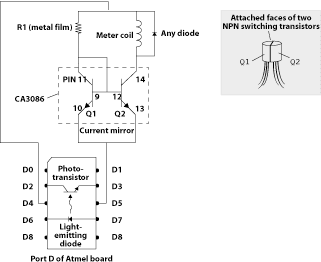
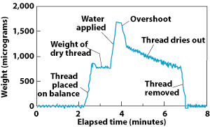

Take for instance the problem of measuring extremely tiny masses. George Schmermund developed a fantastic approach, which I described in these pages in June 1996. George extracted the coil and armature from a discarded galvanometer and mounted them upright, so that the needle of the meter moved in a vertical plane. He then connected the coil to a variable voltage and adjusted it until the needle was exactly horizontal. A tiny mass of known weight placed at the end of the needle pulled it downward. George then increased the voltage until the arm returned to its starting position. Because a heavier mass required a proportionally larger increase in voltage to balance it, the change in voltage indicated the weight of a sample. George's electrobalance was able to weigh masses as small as 10 micrograms (that is, 10 millionths of a gram).
That achievement was stunning enough for me, but recently the organizer of our weekly outings, Greg Schmidt, realized that even this amazing performance could be improved on. Greg's design eliminates the need to adjust the needle manually: the balance automatically zeros (or "tares") and levels itself, and it can continuously track how an object changes in mass�the rate at which a single ant loses water through respiration, for instance. The result is an extremely versatile electrobalance with microgram sensitivity that can be built for less than $100.
Here's how it works. Greg took George's basic design and added an inexpensive microcontroller (a small computer with its central processing unit and memory all on a single chip), instructing it to send 2,000 weak current pulses through the coil each second. The inertia of the armature and needle prevents them from responding to each short pulse, so the deflection reflects the average current in the coil. The individual pulses do, however, seem to be large enough to vibrate the bearings of Greg's galvanometer. He believes that this slight jitter reduces "stiction," the tendency of a bearing to lock in place when it is not moving. This effect seems to account for why an inexpensive meter like his can respond to the tug of such tiny masses.
|  ELECTRONIC WIRING required for the project is minimal because the microcomputer used resides on a self-contained board. Only two transistors, a resistor and a diode need be hooked up, in addition to the integrated optical sensor (which contains a phototransistor and a light-emitting diode). Although performance of the "current mirror" circuit will be superior if its two transistors reside on the same silicon chip, separate NPN transistors can be used if their casings are attached (as shown above) so that they both stay at exactly the same temperature. |
Greg didn't design his circuit to reduce stiction, though. This feature turned out to be an unforeseen benefit of using "pulse width modulation" to control the average current sent through the coil. With this scheme, the time between successive pulses is kept the same, but the microcontroller varies the duty cycle�the fraction of the cycle during which the current remains on. Pulse trains with short duty cycles energize the coil for only a smidgen of the total time and so can lift only the smallest weights, whereas pulse trains with longer duty cycles can hoist heavier loads. Greg's microprocessor can generate 1,024 different values for the duty cycle. That number sets the dynamic range of the balance. If the maximum current is set so that the apparatus can lift up to one milligram, for example, the smallest detectable mass will be about one microgram.
Such sensitivity is pretty impressive. Yet the microcomputer that runs the show need not be anything special. Indeed, one has a dizzying array of choices to pick from. But if you haven't a clue how to go about selecting and programming a microprocessor, don't worry: Greg developed his instrument with the novice in mind. He used the Atmel AT 89/90 Series flash Microcontroller evaluation kit, which includes a fully functional and extremely versatile microcomputer, one that links directly to a personal computer. This kit (model STK-200) includes everything you need to get going and costs less than $50 (see Amtel Corporation for a list of suppliers).
Unfortunately for Macintosh users, this system supports only IBM compatibles. In any case, you don't have to program everything from scratch, because Greg developed all the software needed to run the device, including instructions that show the weight in real time on a small liquid-crystal display (catalogue number 73-1058-ND from Digi-Key; 800-344-4539). You can download his code for free from the Web site of the Society for Amateur Scientists.
As with George's original design, almost any galvanometer plucked from a surplus bin will work. Just make sure that it measures small currents and that its needle tends to stay in place when the unit is rocked rapidly from side to side. Whereas George's prototype required the operator to squint at the needle, Greg's electrobalance senses the position of the needle electronically using a phototransistor and a light-emitting diode, which you can also purchase from Digi-Key (catalogue number QVA11334QT-ND comprises a single unit). Pierce a small piece of aluminum foil with a pin and center the hole on the phototransistor, as shown on page 90. With the foil covering most of the phototransistor, the signal will go from full on to full off very rapidly when the needle interrupts the light from the diode. Attach a sliver of balsa wood as shown to stop the needle exactly at that point.
If too little current is in the coil, the needle will rest on the bottom piece of balsa and block the light. Too much current lifts the needle completely out of the light path. Greg's software uses a sophisticated algorithm to keep the needle balanced between these two states. After the device has been properly calibrated and tared, this pulse width reflects the mass of the sample.
|
 CONTINUOUS RECORDING of the changing weight of a one-centimeter length of moistened thread demonstrates the versatility of this inexpensive instrument. |
The control circuit that helps accomplish all this magic is shown above. You will need to adjust the value of R1 to set the maximum current to something your meter can handle. The full-scale current might be indicated on the meter. Otherwise, use a variable resistor, a nine-volt battery and a current meter to measure it. Because Greg's galvanometer topped out at five milliamperes, he programmed the microcontroller to create a five-milliampere current by delivering a five-volt pulse across a one-kilohm resistor.
That current is not, however, directed through the coil. Rather it flows through a circuit called a current mirror, which forces an identical current to pass into the coil. This trick dramatically improves the long-term stability of the balance. Why? The resistance of the coil depends on its temperature, which rises whenever electrical energy is dissipated inside it. But the mirror circuit keeps the current constant no matter what the temperature of the coil is.
Of course, the resistance of R1 will itself vary somewhat with temperature, which could cause the calibration to drift. So you'll want to use a component with a low temperature coefficient. A 1 percent tolerance metal-film resistor, for instance, typically shifts a mere 50 parts per million for each degree Celsius. You will also need to keep the two transistors in the current mirror at the same temperature to prevent that circuit from drifting. It's best to use a set of matched transistors on a single silicon chip, like the CA3086 (48 cents from Circuit Specialists; 800-528-1417). Otherwise, wire two identical NPN switching transistors together with their casings touching as shown above.
A delightful demonstration of the sensitivity his apparatus achieves is shown in the graph at the left. Greg soaked a centimeter of fine thread in water. He then monitored its weight as the water slowly evaporated. Remarkable.